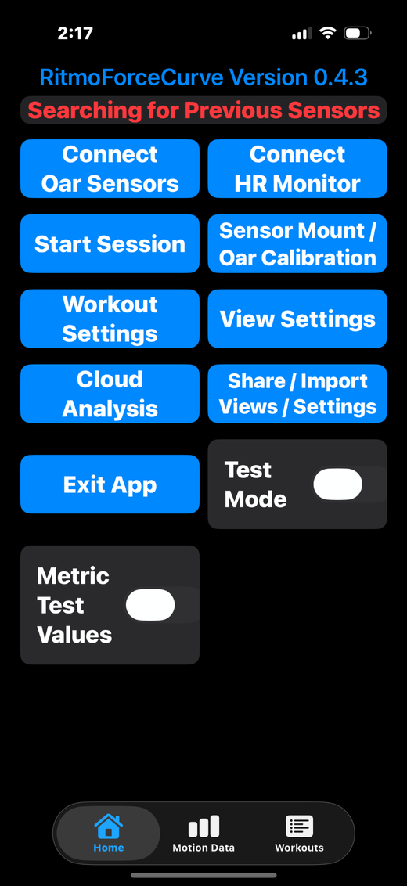
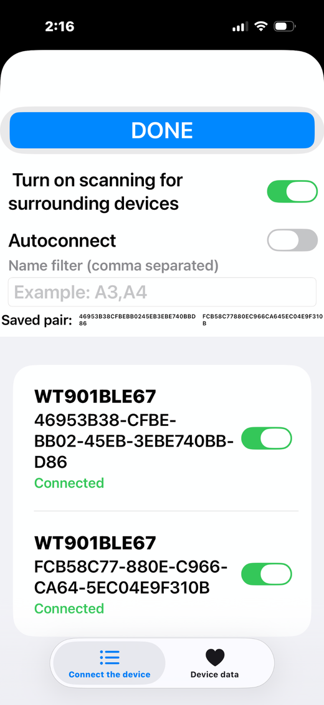
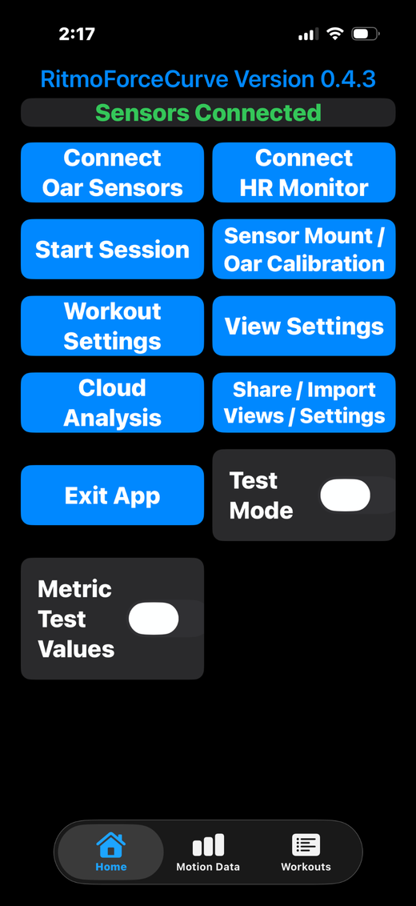

Connecting Oar Sensors
Choose the oar you are using, connect its saved sensors, and confirm the oar name and connection status before starting your session.
Open Connect Oar, choose a saved name and tap Connect. Use Scan oar label to import a labeled oar, or Set up a new oar for a new sensor pair. Manage Oars includes saved oars and independent managed copies; opening a record does not change the rowing connection. The reference screenshots below show an earlier beta; follow the current control names in these steps.
Power the sensors and choose your oar
- Turn on the sensors mounted on the oar.
- Open RitmoForceCurve and tap Connect Oar.
- Choose the saved oar under Oars to connect, or use Scan oar label if a label is attached. Check the name, side and setup.
- Tap Connect beside the selected name. For a new oar, use Set up a new oar to create its record first.
A saved oar keeps the setup tied to the correct sensor pair. Found means detected nearby; Connected means fresh readings are arriving. Wait for the expected sensors to connect before starting.

Choose automatic connection for next time
- Select the saved oar you intend to use.
- Enable Connect automatically next time for that name if you want it remembered for the next app launch.
- Tap Connect to connect now, then allow a few seconds for the powered sensors nearby to connect.
- If the app keeps searching, confirm the oar selection and check that another phone or app is not using the sensors.
The automatic-connection choice is saved separately from the Connect action. The reference screenshots use the earlier label Autoconnect.

Set up a new sensor pair
- Choose Set up a new oar and let the app find nearby unnamed sensors.
- Select and connect the two sensors mounted on your oar.
- Enter a recognizable oar name, its side and type.
- Tap Save and connect to associate the sensors with that oar.
WitMotion names can look alike. If several pairs appear, move away from other sensors or identify your pair before selecting it. You do not need to infer shaft-versus-sleeve position from the Bluetooth name; follow the setup and alignment workflow.

Keep the sensors associated with the oar
- Confirm that the expected sensors are connected to the selected oar.
- Enable Connect automatically next time for that name if desired.
- Finish the setup and return to Home.
Switch the active oar in Connect Oar. Review its details and alignment in Oar Settings. Check the selected name before recording.

Resolve an incorrect selection
- Stop and check which saved oar is selected.
- Disable automatic connection for an incorrect saved selection while you correct it.
- Disconnect the incorrect selection, then choose the right saved oar. If its sensor assignment is wrong, correct the oar’s saved sensor setup before connecting.
- Save the corrected setup and enable Connect automatically next time for the intended name.
Do this away from other active sensors if possible. Closing another app or disconnecting another phone may be necessary before the sensor becomes available.

Check the setup before rowing
- Confirm the correct oar name and all expected sensor connections on Home.
- Open Oar Settings and review Active Oar details: side, type, dimensions, sensor positions, alignment and active calibration factor.
- If a sensor has moved, repeat motion alignment.
- Secure the iPhone to the boat, check motion/location permissions, choose your rowing view and tap Start Rowing.
The alignment series has four required movements. Save the alignment before using the optional Squared float to capture a separate water reference; save an accepted float to Oar Settings. Confirm the active Moment/Bend Factor and dimensions before relying on calibrated loading.

Troubleshooting
Check its power, move the phone closer and retry. Power-cycle the missing sensor if needed.
Confirm your saved oar and sensor pair. Set up new sensors away from other active pairs where possible.
Names with no nearby sensors found are hidden. Check sensor power and proximity, then reopen the choice list.
Disconnect there or close that app, then try connecting in RitmoForceCurve again.
Set up a named pair
Save each physical oar with its own two sensors first. In Connect Oar, choose Create a sculling pair or two sweep oar pair, select the saved oars, enter a pair name and tap Save and connect. The pair needs four distinct sensors; each oar keeps its alignment and calibration.
A sculling pair uses one port and one starboard sculling oar. A sweep pair uses two sweep oars, which may be on the same side. Confirm all expected connections before rowing. The app offers a choice to use the connected oar or keep looking if a pair is only partly connected after five seconds.
Align both oars becomes available when the pair is connected. Perform the guided movements together; the app processes each oar independently. Alignment instructions →
Oar settings & calibration iOS sensor alignment Record and upload the workout